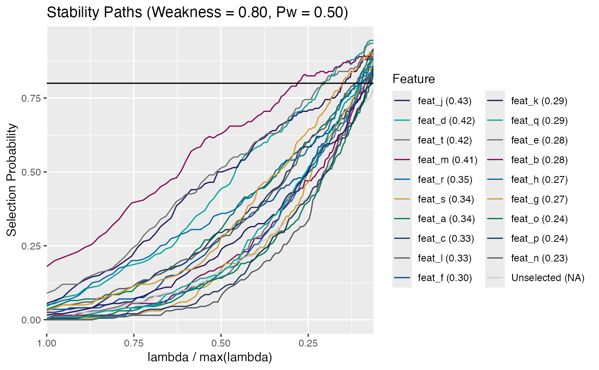

Stability Selection
stability_selection.RdPerforms stability selection on a set of predictive features and a response
variable. Stability selection is performed using a user-specified kernel.
For classification problems the l1-logistic kernel should be used and the
response should be a vector or factor of with two class labels. For lasso
the response column should be a numeric vector. For "Cox" the response is a
two column matrix containing the event time in the first column and the
censoring indicator in the second column.
The randomized lasso is used if the alpha parameter is set to a value
less than 1. In a randomized Lasso the model coefficients are randomly
re-weighted when calculating the regularization term. This weighting can be
performed in two different ways. If Pw = NA then these random
weights are sampled uniformly between alpha and 1. If Pw is
supplied, then the random weights are chosen to be alpha with
probability Pw and 1 otherwise. The latter choice is used in Theorem
2 in Meinshausen and Buhlmann. Recommended values of alpha and
Pw are [0.5, 0.2].
The is_stab_sel() function checks whether
an object is class stab_sel. See inherits().
Usage
stability_selection(
x,
y = NULL,
kernel = c("l1-logistic", "lasso", "ridge", "Cox", "pca.sd", "pca.thresh",
"multinomial"),
num_iter = 100,
parallel = FALSE,
alpha = 0.8,
Pw = 0.5,
num_perms = 0,
standardize = TRUE,
lambda_min_ratio = 0.1,
beta_threshold = 0L,
elastic_alpha = 1,
lambda_pad = 20,
impute_outliers = FALSE,
impute_n_sigma = 3,
r_seed = sample(1000, 1),
...
)
is_stab_sel(x)
# S3 method for class 'stab_sel'
print(x, ...)
# S3 method for class 'stab_sel'
summary(object, ..., thresh)
# S3 method for class 'stab_sel'
plot(
x,
thresh = 0.6,
custom_labels = NULL,
main = NULL,
sort_by_AUC = TRUE,
ln_cols = unlist(col_palette),
add_perm = FALSE,
emp_thresh = seq(1, 0.1, by = -0.01),
...
)Arguments
- x
A numeric \(n x p\) matrix of predictive features containing
nobservation rows andpfeature columns. Alternatively, astab_selclass object if passing to one of the S3 generic methods.- y
The response variable. If kernel is "l1-logistic" then a vector of binary class labels. If kernel is "Cox" then it is a two column matrix with the event time in the first column and the censoring indicator (1 = event, 0 = censored) in the second column.
- kernel
character(1). A string describing the underlying model used for selection. Options are:"l1-logistic" (default)
"lasso"
"Cox"
"ridge"
"multinomial"
"pca.sd"
"pca.thresh"
- num_iter
integer(1). Defining the number of sub-sampling iterations for the stability selection.- parallel
logical(1). Should parallel processing via multiple cores be implemented? Must be on a Linux platform and have the parallel package installed. Otherwise defaults to 1 core.- alpha
numeric(1). Value defining the weakness parameter for the randomized regularization. This is the minimum random weight applied to each beta coefficient in the regularization.- Pw
numeric(1). Value defining probability of a weak weight, seealpha. IfPw = NAthen the coefficient weights are sampled uniformly fromalphato 1.- num_perms
integer(1). The number of permutations to use in calculating the empirical false positive rate.- standardize
logical(1). Whether the data should be centered and scaled.- lambda_min_ratio
The minimum value of lambda/max(lambda) to use during the selection procedure. See
glmnet().- beta_threshold
numeric(1). Floating point value defining selection levels forridge regression. Since ridge regression will not zero out coefficients, selection of coefficient curves by selection probability is not effective. Any variable having a coefficient with absolute value greater than or equal tobeta_thresholdwill be selected.- elastic_alpha
numeric(1). Floating point value between 0 and 1. When 0, the results ofglmnet()are equivalent to Ridge regression. When 1, the results are equivalent to Lasso. Any value between 0 and 1 creates a compromise between L1 and L2 penalty.- lambda_pad
The lambda path is padded with high values of lambda in order to produce a more appealing plot. Occasionally, the degree of padding needs to be adjusted in order to produce better resolution at low values of lambda. Typical values for this parameter are 20 (default), 15, 10, or 5.
- impute_outliers
logical(1). Should statistical outliers (\(3 * \sigma\)) be imputed to approximate a Gaussian distribution during stability selection? Seewranglr::impute_outliers().- impute_n_sigma
numeric(1). Standard deviation outlier threshold for imputing outliers ifimpute_outliers = TRUE, ignored otherwise.- r_seed
integer(1). Seed for the random number generator, allowing for reproducibility of results.- ...
Additional arguments passed to one of the S3 methods for
stab_selclass objects, generics include:plot.stab_sel()print.stab_sel()summary.stab_sel()
- object
An
stab_selclass object.- thresh
A numeric minimum selection probability threshold. This value can also be a vector of values in
[0, 1], but ideally greater than 0.50.- custom_labels
character(n). Character vector of additional features to label in the plot, seeDetails.- main
character(1). Optional plot title (default depends on kernel).- sort_by_AUC
logical(1). IfTRUE, entries in the legend will be sorted by their curve AUC values which are in parentheses following the variable name in the legend.- ln_cols
character(n). A vector of colors to be used as line colors in plotting. Recycled as necessary.- add_perm
logical(1). Should empirical false discovery lines from the null permutation be added to the plot (only if permutation was performed)? This can be time consuming depending on the number of permutations.- emp_thresh
numeric(n). A vector describing the empirical threshold values to be used (default = seq(1, 0.1, by = 0.01)).
Value
A stab_sel class object:
- stabpath_matrix
A matrix of \(features x lambda_seq\) containing stability selection probabilities. A row in this matrix corresponds to a stability selection path for a single feature.
- lambda
the sequence of lambdas used for regularization. They correspond to the columns of
stabpath_matrix.- alpha
the weakness parameter provided in the call.
- Pw
the weak weight probability provided in the call.
- kernel
the kernel used (e.g. l1-logistic).
- num_iter
The number of iterations used in computing the stability paths.
- standardize
should the data be standardized prior to analysis?
- lambda_min_ratio
?
- perm_data
Logical. Is there permuted data to perform empirical FDR?
- permpath_list
list containing information to calculated the permutation paths of the empirical false positive rate.
- perm_lambda
The lambda used in the permuted lists.
- permpath_max
max lambda for the permuted lists (I think).
- beta
A matrix of the betas calculated during the selection process.
- r_seed
The random seed used.
The is_stab_sel function returns a logical boolean.
The S3 print method returns:
- Stability Selection Kernel
The kernel used in the stability selection algorithm.
- Weakness
The weakness used (
alphaargument).- Weakness Probability
The probability of the weakness being applied (
Pw =argument).- Number of Iterations
Number of iterations in the selection (
num_iter =argument).- Standardized
Was the data standardized prior to stability selection?
- Imputed Outliers
Were statistical outliers imputed to the Gaussian approximation prior to stability selection?
- Lambda Max
The maximum lambda (tuning parameter) used.
- Lambda Max
The maximum lambda (tuning parameter) used.
- Random Seed
The seed passed to the random number generator for subset selection.
A ggplot.
Details
Stability selection can be performed on multiple cores by setting
parallel = TRUE. This functionality requires
parallel::mclapply() from the parallel package.
This is not available for Windows based OS.
Functions
print(stab_sel): S3printmethod for classstab_sel.summary(stab_sel): The S3summarymethod for classstab_sel.plot(stab_sel): The S3plotmethod plots the selection paths for the features. This plot closely resembles a lasso coefficient plot with the regularization parameter (lambda) plotted on x-axis and the feature selection probability (rather than the model coefficient) is plotted on the y-axis.Plots the regularization parameter (lambda) on the x-axis and the selection probability on the y-axis. The regularization parameter is plotted as lambda/max(lambda) so that it is in the range from 1 to 0. The selection probability corresponds to the number of times a particular marker was chosen at a given value of lambda. Each line in the plot is a marker and represents the stability selection path over the range of regularization parameter. All features that have a maximum selection probability greater than
thresh(shown as a dotted horizontal line) are colored and labeled and the remaining features are colored gray and unlabeled. Additionally, you can provide a set of custom labels that will be colored and labeled regardless of their max selection probability. Each feature is labeled with a capital letter and the full name of the feature is indicated in the legend along with the AUC for its curve in parentheses.
Note
Additional features can be passed as strings to the summary method
via the add_features argument.
References
Meinshausen, N. and Buhlmann, P. (2010), Stability selection. Journal of the Royal Statistical Society: Series B (Statistical Methodology), 72: 417-473. doi: 10.1111/j.1467-9868.2010.00740.x
See also
glmnet(), get_stable_features()
Examples
# l1-logistic
withr::with_seed(101, {
n_feat <- 20
n_samp <- 100
x <- matrix(rnorm(n_samp * n_feat), n_samp, n_feat)
colnames(x) <- paste0("feat", "_", head(letters, n_feat))
y <- sample(1:2, n_samp, replace = TRUE)
stab_sel <- stability_selection(x, y, kernel = "l1-logistic", r_seed = 101)
})
#> ✓ Using kernel: 'l1-logistic' and 1 core (serial)
# Cox
xcox <- feature_matrix(stabilityselectr:::log_rfu(simdata))
# Note: this works because colnames are already "time" and "status".
# In 'real' datasets, you may need to rename the final matrix as
# "time" and "status".
ycox <- select(simdata, time, status) |> as.matrix()
stab_sel_cox <- stability_selection(xcox, ycox, kernel = "Cox", r_seed = 3)
#> ✓ Using kernel: 'Cox' and 1 core (serial)
# Test for class `stab_sel`
is_stab_sel(stab_sel)
#> [1] TRUE
# S3 print method
stab_sel
#> ══ Stability Selection (Kernel: l1-logistic) ══════
#> • Weakness (alpha) 0.8
#> • Weakness Probability (Pw) 0.5
#> • Number of Iterations 100
#> • Standardized 'Yes'
#> • Imputed Outliers 'No'
#> • Lambda Max 0.144
#> • Lambda Min Ratio 0.1
#> • Permuted Data 'No'
#> • Random Seed 101
#> ═══════════════════════════════════════════════════════════════════════
# S3 summary method
summary(stab_sel, thresh = 0.6)
#> # A tibble: 20 × 4
#> feature MaxSelectProb AUC FDRbound
#> <chr> <dbl> <dbl> <dbl>
#> 1 feat_d 0.945 0.422 0.0125
#> 2 feat_t 0.935 0.416 0.025
#> 3 feat_a 0.915 0.342 0.0375
#> 4 feat_j 0.915 0.430 0.05
#> 5 feat_s 0.905 0.343 0.0625
#> 6 feat_m 0.9 0.410 0.075
#> 7 feat_l 0.89 0.326 0.0875
#> 8 feat_f 0.885 0.300 0.1
#> 9 feat_q 0.88 0.290 0.113
#> 10 feat_g 0.87 0.269 0.125
#> 11 feat_e 0.86 0.283 0.138
#> 12 feat_n 0.86 0.226 0.15
#> 13 feat_r 0.86 0.352 0.163
#> 14 feat_c 0.855 0.326 0.175
#> 15 feat_k 0.85 0.292 0.188
#> 16 feat_b 0.845 0.275 0.2
#> 17 feat_o 0.84 0.243 0.213
#> 18 feat_h 0.835 0.274 0.225
#> 19 feat_p 0.83 0.236 0.238
#> 20 feat_i 0.785 0.242 0.25
summary(stab_sel, thresh = 0.8, add_features = "feat_c") # force feat_c into table
#> # A tibble: 19 × 4
#> feature MaxSelectProb AUC FDRbound
#> <chr> <dbl> <dbl> <dbl>
#> 1 feat_d 0.945 0.422 0.00417
#> 2 feat_t 0.935 0.416 0.00833
#> 3 feat_a 0.915 0.342 0.0125
#> 4 feat_j 0.915 0.430 0.0167
#> 5 feat_s 0.905 0.343 0.0208
#> 6 feat_m 0.9 0.410 0.025
#> 7 feat_l 0.89 0.326 0.0292
#> 8 feat_f 0.885 0.300 0.0333
#> 9 feat_q 0.88 0.290 0.0375
#> 10 feat_g 0.87 0.269 0.0417
#> 11 feat_e 0.86 0.283 0.0458
#> 12 feat_n 0.86 0.226 0.05
#> 13 feat_r 0.86 0.352 0.0542
#> 14 feat_c 0.855 0.326 0.0583
#> 15 feat_k 0.85 0.292 0.0625
#> 16 feat_b 0.845 0.275 0.0667
#> 17 feat_o 0.84 0.243 0.0708
#> 18 feat_h 0.835 0.274 0.075
#> 19 feat_p 0.83 0.236 0.0792
# S3 plot method
plot(stab_sel, thresh = 0.8)
